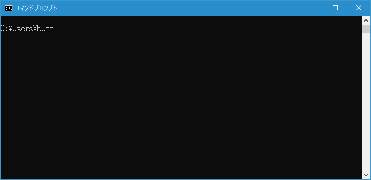
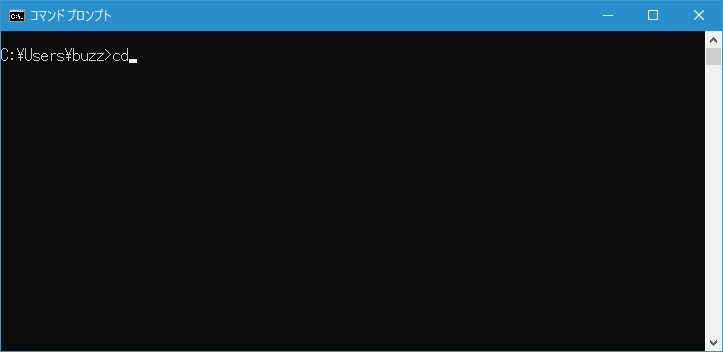
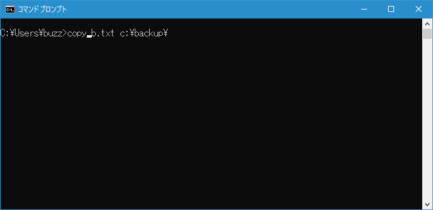
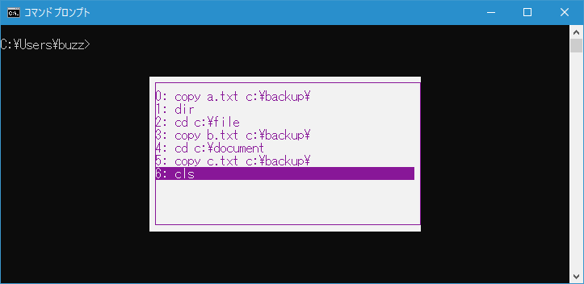
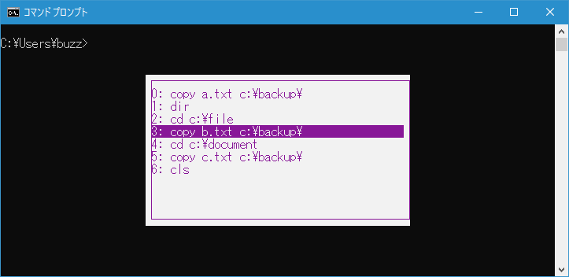
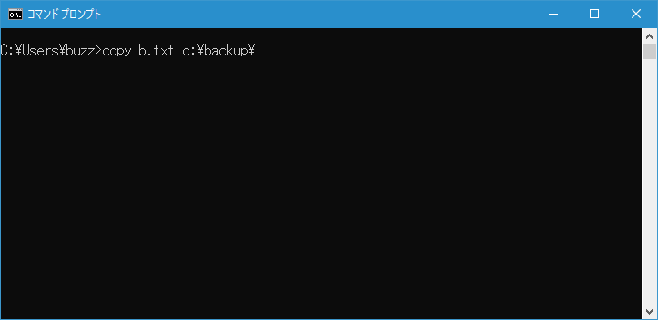
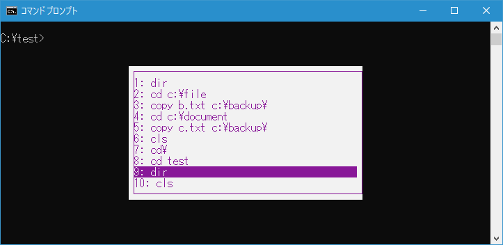
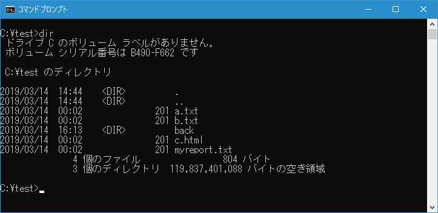
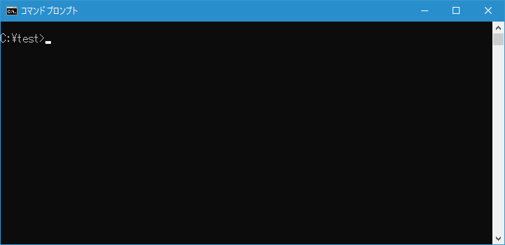

- Home ›
- コマンドプロンプトの使い方 ›
- 便利な入力機能
コマンド履歴を利用する
コマンドプロンプトでは、コマンドプロンプトを起動してから入力したコマンドを順に記憶しており、同じコマンドを実行する場合は履歴を利用することができます。ここではコマンドプロンプトで履歴を利用する方法について解説します。
コマンドの履歴を順に表示する
例としてコマンドプロンプトを起動したあとで、次の3つのコマンドを順に実行した場合で考えてみます。
cd
dir
cls
コマンドプロンプトでは実行したコマンドを履歴として保存しています。履歴を表示するには[↑]キーを押してください。直前に実行したコマンドが表示されます。

[↑]キーを押すたびに1つ前に実行したコマンドが表示されます。

[↓]キーを押すと1つ後に実行したコマンドが表示されます。

最初と最後に実行した履歴を表示する
コマンドプロンプトを起動し最初に実行したコマンドを表示するには[PageUp]キーを押してください。
最後に実行したコマンドを表示するには[PageDown]キーを押してください。
一部入力した文字に一致するコマンド履歴を表示する
例としてコマンドプロンプトを起動したあとで、次のコマンドを順に実行した場合で考えてみます。
copy a.txt c:\backup\
dir
cd c:\file
copy b.txt c:\backup\
cd c:\document
copy c.txt c:\backup\
cls
[↑]キーを使うことで順に履歴を見ていくことができるのですが、探したいコマンドの一部を入力してから[F8]キーを押すと、入力した文字に一致する履歴だけが表示されます。
では「copy」と入力してから[F8]キーを押してください。履歴の中で「copy」から始まる履歴が表示されます。
さらに[F8]キーを押していくと、履歴の中で「copy」から始まる履歴が順に表示されます。

コマンド履歴の一覧を表示する
[F7]キーを押すと、コマンド履歴の一覧が表示されます。

[↑]キーまたは[↓]キーを使って履歴一覧の中を移動することができます。

[→]キーを押すと、履歴一覧の中で現在選択している履歴が表示されます。

[Enter]キーを押すと、履歴一覧の中で現在選択している履歴が実行されます。


コマンド履歴を全て消去する
「Alt」＋「F7」キーを押すとコマンド履歴が消去されます。

画面上は変化がありませんが、[F7]キーを押して履歴一覧を表示しようとしても何も表示されません。
-- --
コマンドプロンプトで履歴を利用する方法について解説しました。
( Written by Tatsuo Ikura )

著者 / TATSUO IKURA
初心者～中級者の方を対象としたプログラミング方法や開発環境の構築の解説を行うサイトの運営を行っています。